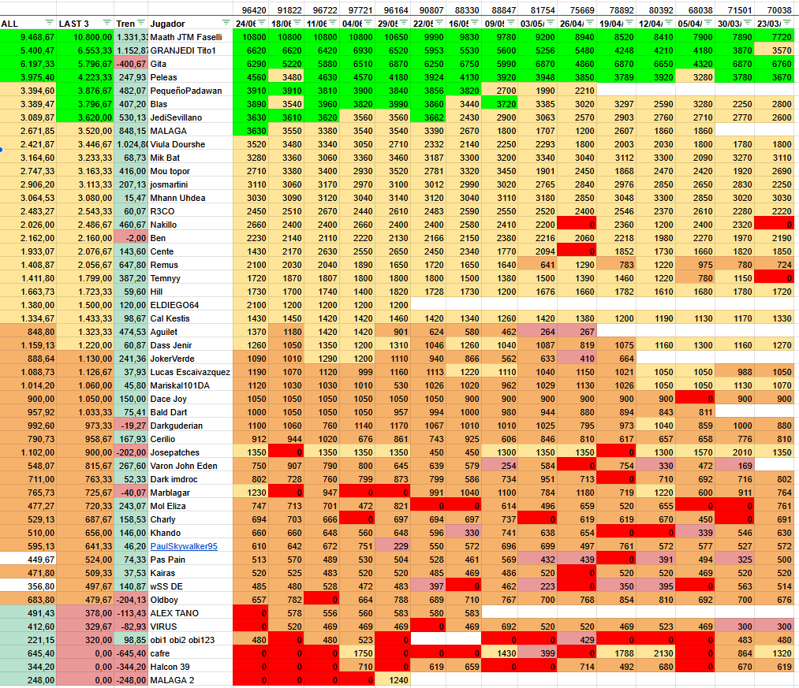

Naboo
| Personaje | Reliquia | Sinergia |
|---|

Equipo Padawan: Luminara, Kit Fisto y tres Jedi
Puntos esperados: 450k

Reliquia 7
Velocidad


Reliquia 5
Velocidad, Daño

Reliquia 5


Reliquia 6

Reliquia 7
- Maximizar el tiempo que los aliados tienen Potencia Y Curación continuada simultántemente.
- Velocidad en Kit Fisto
- Daño (no daño crítico)
- Maximizar las asistencias (por ejemplo, Mace Windu, Aayala, Shaak)
- Cuando un aliado tiene potenciadores de Potencia Y Curación continuada simultántemente, entonces hace DAÑO VERDADERO a TODOS los enemigos e incrementa su posibilidad de CONTRAATAQUE.
- Daño Verdadero no hace críticos.
- Subir a Luminara y Kit Fisto a Equipo 12 transforma moneda mk1 en moneda mk3.
- En el nivel de dificultad 0 y 1, el droide líder no disipa potenciadores, por lo que es un paseo.
Equipo Caballero Jedi: Darth Maul, Darth Sidious y Nute Gunray
Puntos esperados: 1.2M

Reliquia 7
Velocidad, Daño, %Crítico


Reliquia 7
Velocidad, Daño, %Crítico


Reliquia 7

- Maximizar el número de golpes críticos dados, en especial con Darth Maul. Para ello, utiliza los ataques de área cuando tengas Ventaja.
- Cuando sepas que la próxima ronda va a ser de rivales enfurecidos, trata de no matar rivales en la ronda actual para maximizar el número de críticos.
- R2-D2 más un personaje de República Galáctica ayuda (al dar incremento de probabilidad de crítico)
- Si Darth Sidious no es lider, da su habilidad de líder a nivel máximo a todos los sith y separatistas: Incremento 2% de daño por cada crítico.
- Darth Maul con su habilidad de líder da Ventaja (+200% de probabilidad de crítico) a siths al perder sigilo.
- Darth Maul tiene sus estadísticas muy mejoradas en este evento.
- Darth Maul puede por si solo tirar una o con mucha suerte dos rondas de rivales enfurecidos.
- Los tres personajes son necesarios a Reliquia 7 para otros personajes básicos.
Equipo Gran Maestro: Reina Amidala, Maestro Qui-Gon y Padawan Obi-Wan
Puntos esperados: 3.6M

Reliquia 9
Velocidad (350) Daño (9500)

Reliquia 9
Velocidad (310) Daño (11000)

Reliquia 9
Velocidad (311) Daño (9000)
- Mods de velocidad y daño.
- Obtener los 10 potenciadores únicos de la reina en la PRIMERA ronda.
- Reservar el ataque de área de Obi-Wan cuando tenga Ventaja (+200% probabilidad crítico), que la obtiene cuando el Maestro Qui-Gon es dañado.
- Aumentar el número de potenciadores que tiene cada aliado.
- Video :
- La penetración defensiva aumenta por cada potenciador.
- El ataque de área de Obi-Wan acaba con toda la oleada si consigue crítico.
Equipo 4: Gungans
Puntos esperados: 1.2M


Estrategia: Casi en auto, juntar los ataques de área.
Equipo 5: Resto de Jedi
Puntos esperados: 1.8M

Reliquia 7


Reliquia 8

Reliquia 8


Reliquia 7

Reliquia 7
Equipo 6: Sith + Separatistas con B2 de líder
Puntos esperados: 2.7M

Reliquia 8
Reliquia 8
Reliquia 8
- EN AUTO
- en este nivel el ataque especial del lider reduce en 1% el enfurecido

| Naboo | Puntos | NO (8) | Padawan (16) | Caballero Jedi (22) | Gran Maestro Jedi (4) |
|---|---|---|---|---|---|
| 19/04/2025 | 78M (-2) | (8) (==) | 450k (21) (+5) | 1.2M (17) (-5) | 3.6M (4) |
| 12/04/2025 | 80M | (8) (-4) | 450k (16) (+1) | 1.2M (22) (+3) | 3.6M (4) |